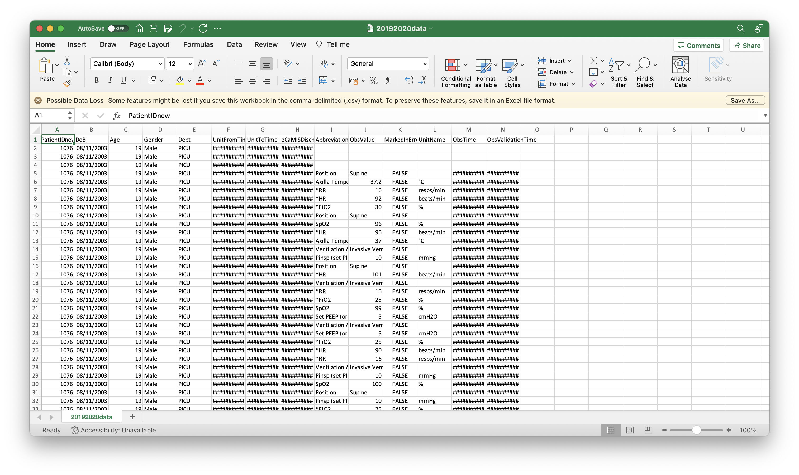
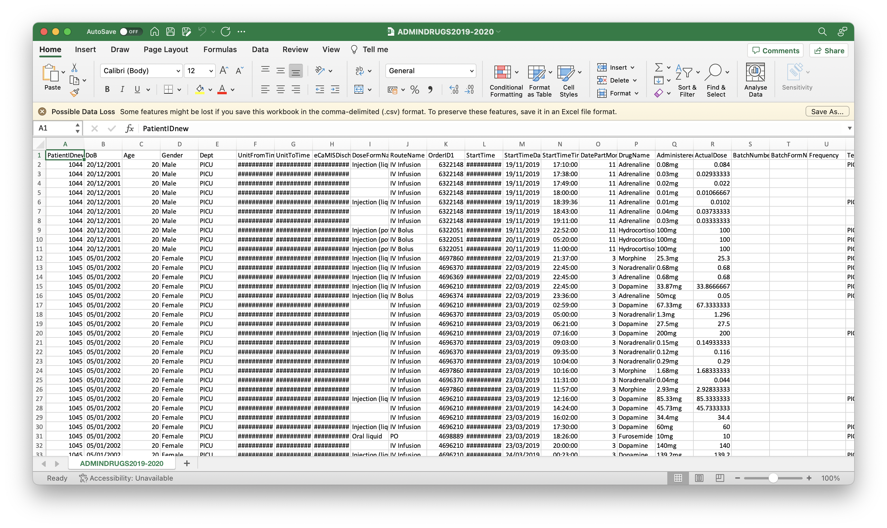

When the program starts, the program will ask for a patient observations CSV file and drug
administration CSV file. If the file is not in the correct format, the program will not start
correctly. For more help on this error, contact your administrator, or view the guide below.
Administrators: follow the guide at the bottom.


You should have received two CSV files with this program - a patient observation file and drug
administration file. If
not, you may have only received the XLSX file, which this program does not have support for. You may
have to convert the
sheets into CSV files that this program can accept.
Please ensure that you input the patient observation file first. This file contains the header "ObsValue" - then
the drugs administration file, which contains the header "AdministeredDose".
For Administrators/Developers
This program attempts to load data from these CSV files which contain the following headers. They are not all essential,
but please ensure your file follows the same format. For more information please see src/data.js where the files are
processed, and src/graph.js where the graphs display the processed data. The README will also explain how the data is
processed.
Observation data: